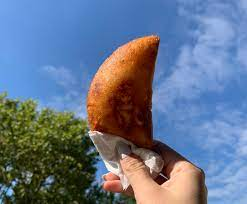

Empanadas Recipes

Description
It is a thin dough of bread, shortcrust pastry and puff pastry filled with a salty or sweet preparation and baked or fried
Empanadas are a traditional dish in most cuisines of Hispanic countries
Ingredients
- 2 cups Bread Flour (corn flour)
- 1/4 cup Wheat Flour
- 2.5 cups water
- 1 spoon of salt
- 2 spoon of sugar
- Oil for stretching the dough and for frying
- Filling to taste
Steps
- The water first in a bowl with the salt and sugar, little by little I add the corn flour, knead and then add the wheat flour, knead and let it rest while I assemble the work area.
- On a flat surface (I used a cutting board) we spread a plastic sheet (I cut a bag), which must be emulsified with fingers dipped in oil (I placed it in one of the small pots).
- I make a small ball with the dough (fist size), I wet my fingers in water (the other small bowl) and flatten it in a round (the thinner the better, but be careful not to break it under the weight of the filling).
- I put the filling in the center (so that there is no liquid, otherwise the dough will break... a trick is to have the stew in the refrigerator so that the liquid is firm) I close the edges and flatten it to finally form a half-moon shape with a round container.
- I remove and recycle the excess edge, and slowly peel off the plastic to pour into the hot oil. I let it brown on both sides